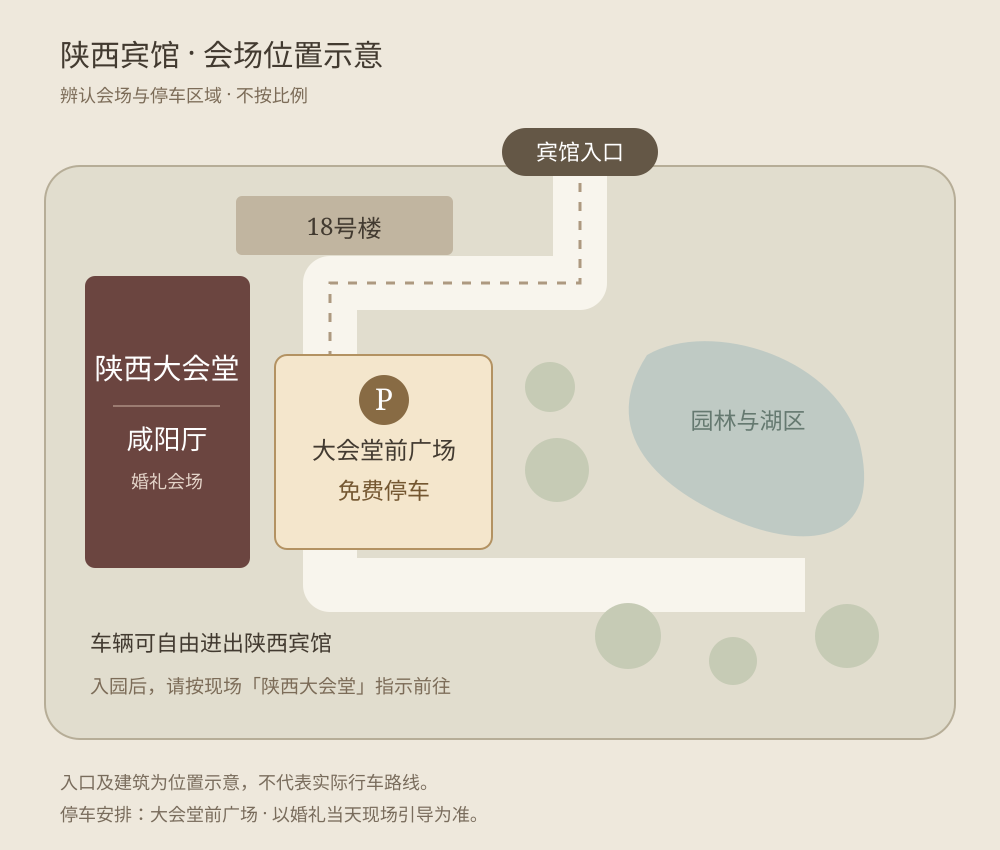

FIND YOUR WAY
交通与停车
2026年11月1日 · 星期日 · 11:28
陕西宾馆
陕西大会堂 · 咸阳厅
陕西省西安市雁塔区丈八北路1号- 停车位置
- 大会堂前广场
- 停车费用
- 免费
- 车辆进出
- 可自由进出陕西宾馆
在高德中选择陕西宾馆内的「陕西大会堂」。若微信未能打开地图，可复制地址后搜索。
添加到手机日历 ＋
放大示意图 ＋进出通道请以现场指示为准。
查看示意图资料来源
园区建筑位置参考2025年公开会议交通指南，停车安排由新人提供。
查看交通指南第39页 ↗